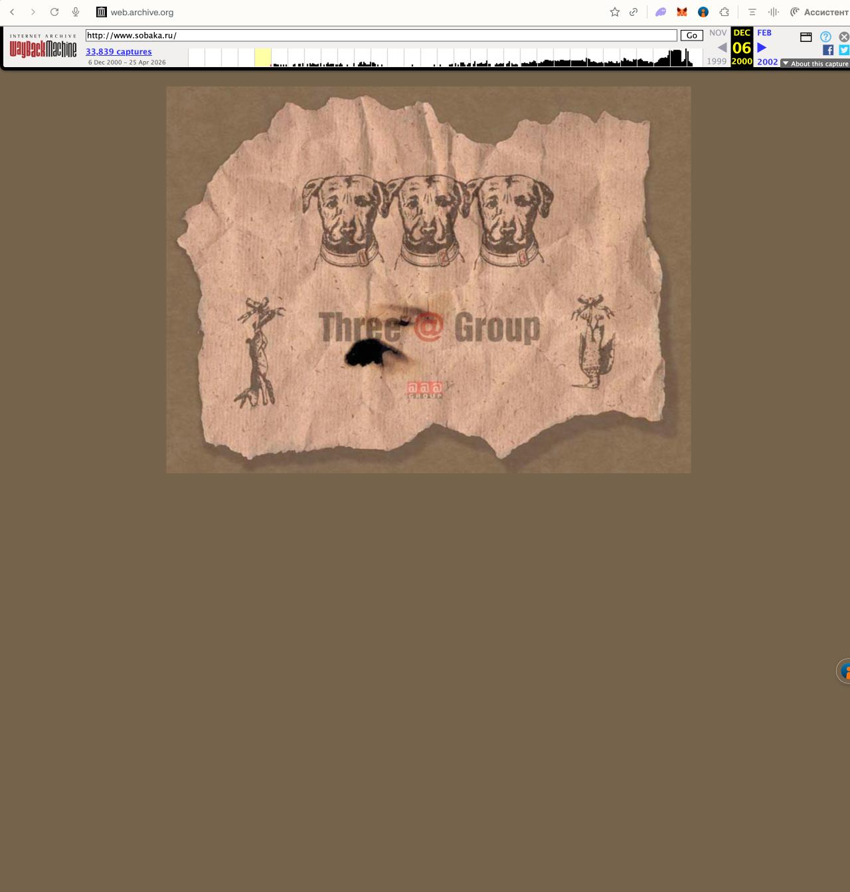
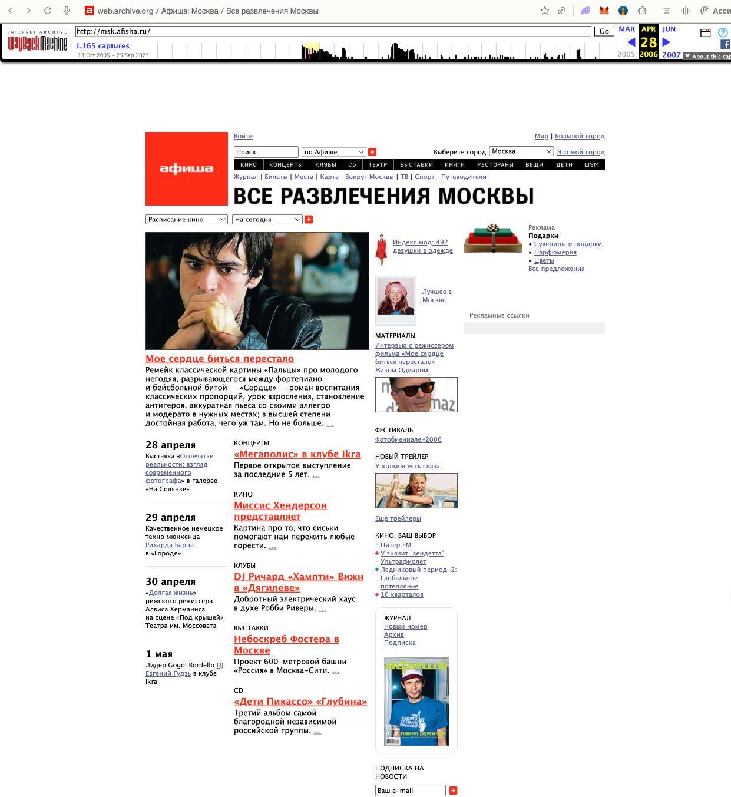
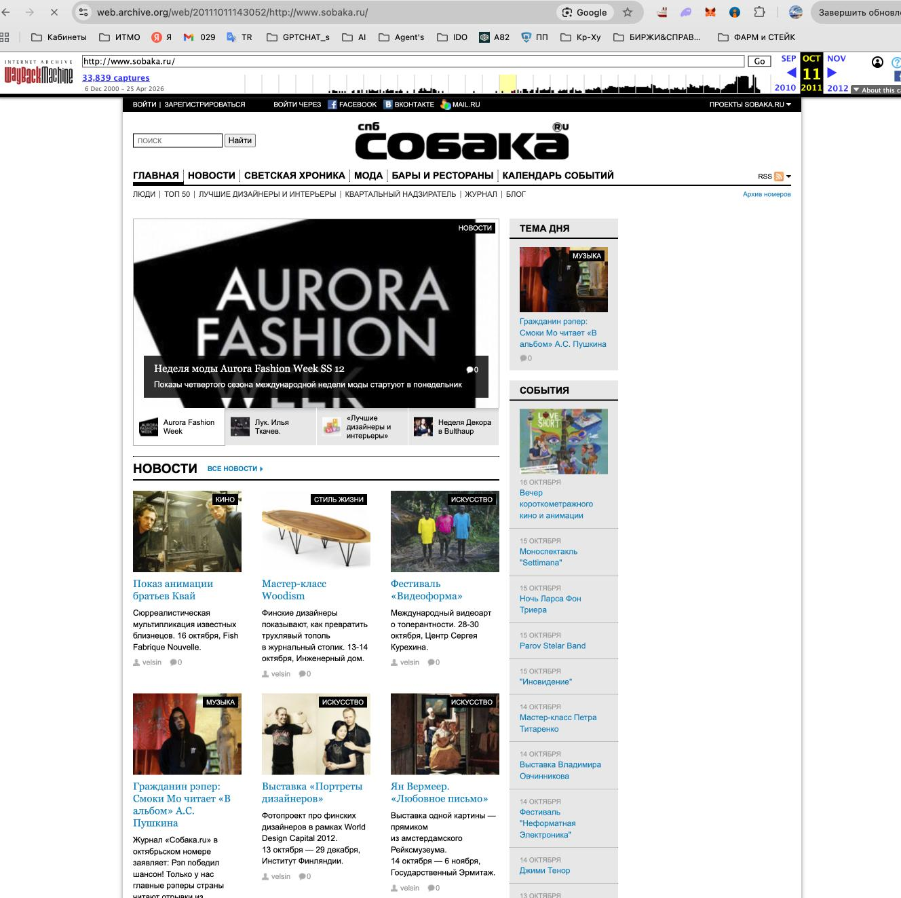
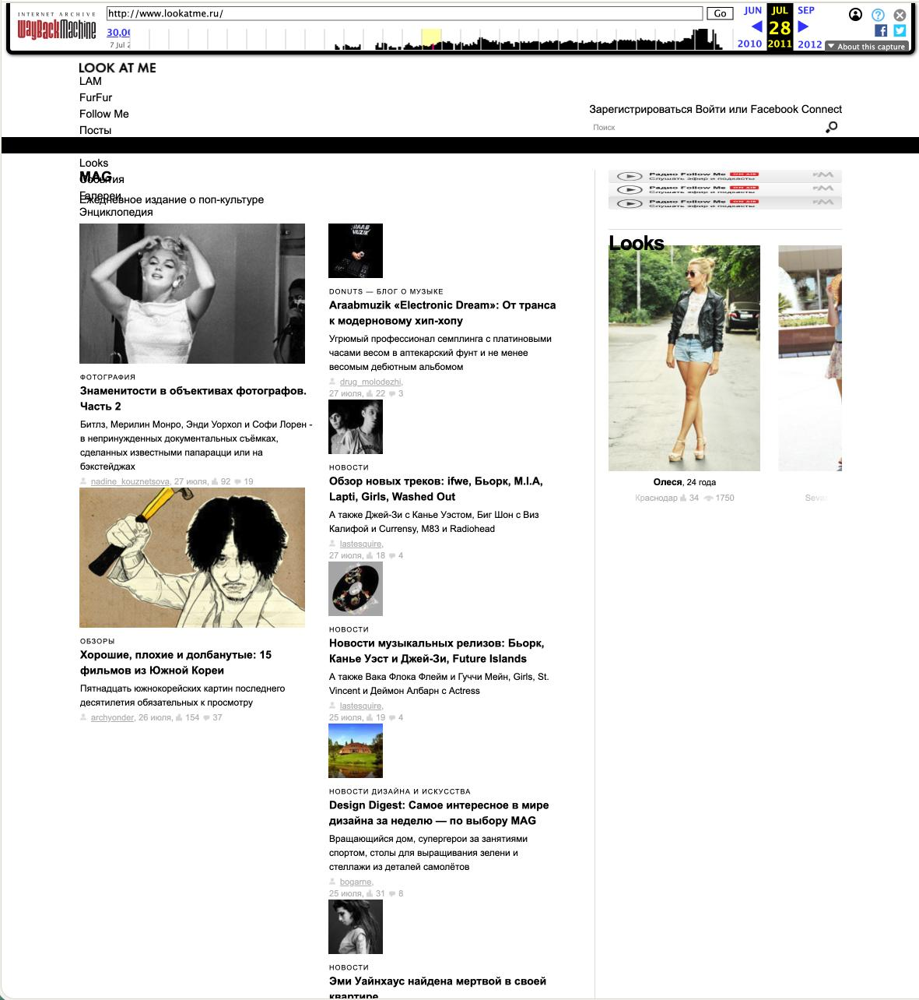
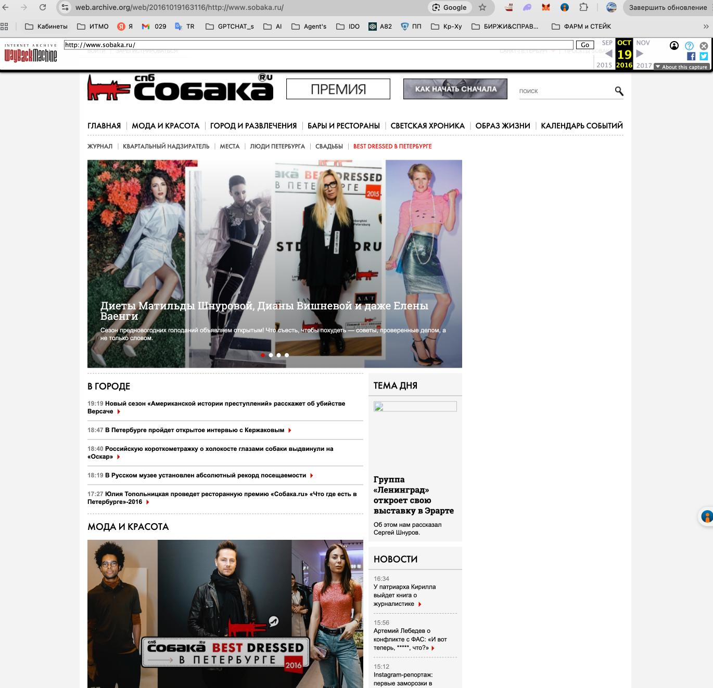
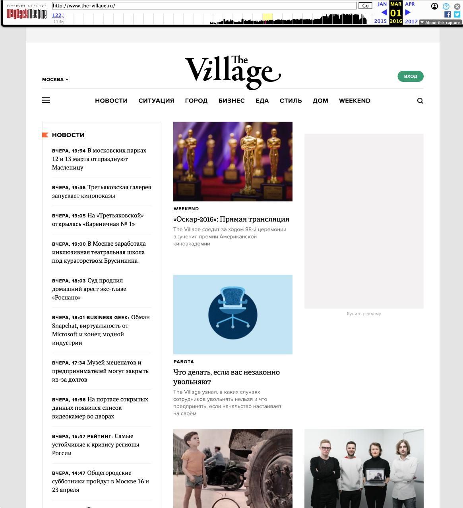
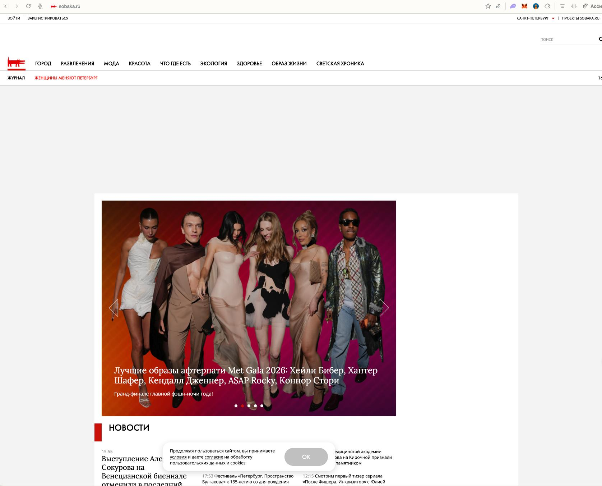
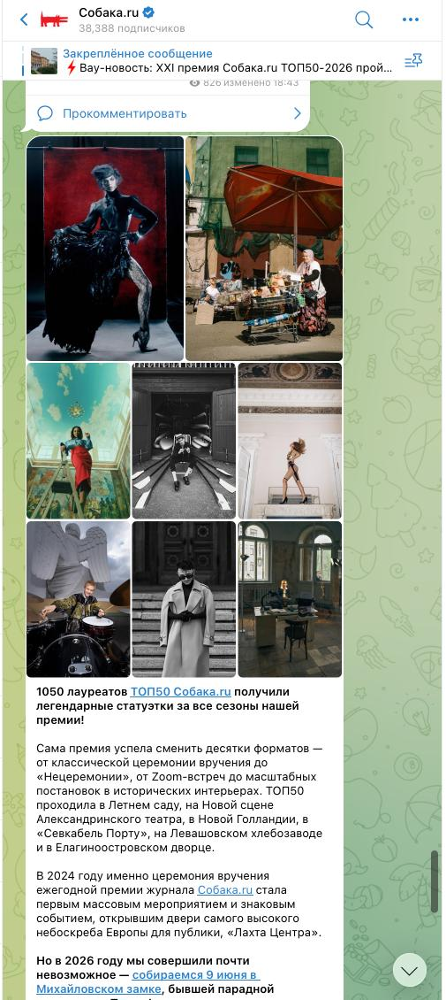
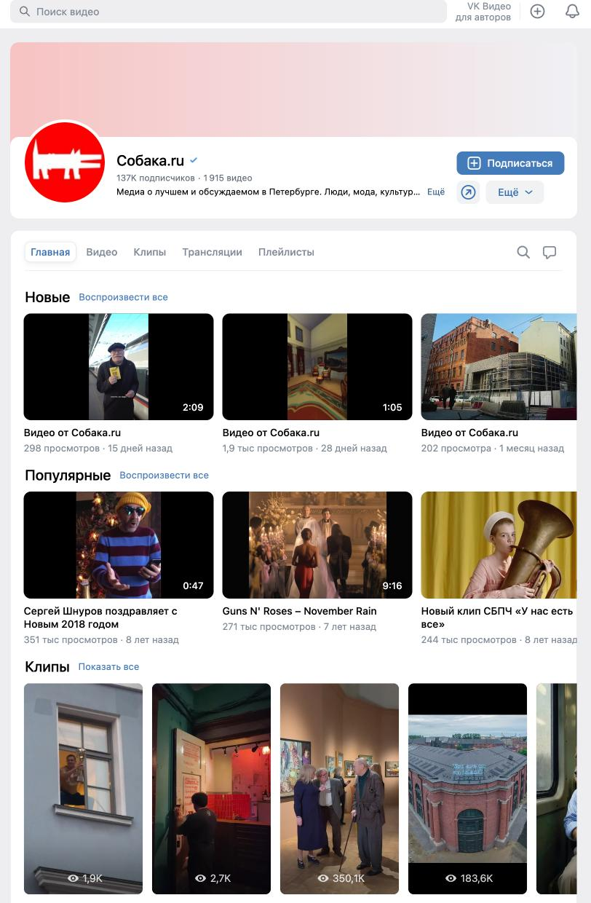

Открываю sobaka.ru с телефона в мае 2026-го и узнаю половину лиц на главной. Это журнал моего города, журнал среды, в которой протекает моя жизнь и прошло моё взросление, следом я открываю Wayback Machine, набираю тот же адрес и выбираю 2000 год — и на экране три нарисованные собаки на флеш-заставке. Не СМИ, не лента, не каталог — просто объект. И в этот момент становится ясно: то, что я открыл с телефона, и то, что было в 2000-м, — это не одно и то же существо, повзрослевшее за двадцать шесть лет. Это разные виды.
Соблазн рассказать про sobaka.ru как про «оцифрованный глянец» — сайт, который рос рядом с бумажным журналом и постепенно научился быть его электронной копией. Так удобно думать и это первое, что пришло мне в голову, но это неправда. Большую часть своей жизни сайт даже не делала редакция журнала: до середины 2010-х это были разные команды. Сайт никогда не копировал бумагу, он догонял интернет — и конкретно тех, кто в интернете задавал правила: медиа, рождённые в цифре, без всякого печатного прошлого. Четыре редизайна sobaka.ru — это четыре раза, когда сайт спохватывался и бежал за уже изменившейся средой.
Сайт не взрослел вместе с журналом — он догонял чужой интернет и каждый раз будто опаздывал.
Первый сайт — это чистая «утка» в смысле Вентури: форма здесь и есть содержание, объект сам себя означает, он ничего не упаковывает. Три собаки, Flash, агрессивный красный, жёсткая табличная вёрстка. Делала это веб-студия Molinos — отдельные люди с отдельной логикой, и получился у них цифровой арт-объект, который носит имя журнала, при этом медиа не являясь.
Когда к середине двухтысячных сайт всё-таки превращается в витрину, он делает единственное, что умеет: пытается изобразить глянец средствами HTML. Рубрики набраны курсивным рукописным шрифтом — наивная попытка имитировать журнальную типографику там, где её технически нет. Появляется колонка «Персоны»: светская жизнь, втиснутая в таблицу, что является важной деталью — сайт не воспроизводит макет журнала, он имитирует саму идею «глянцевости», не имея для неё инструментов.


Для сравнения — что делала Афиша в те же годы, пока «Собака» оставалась флеш-игрушкой, afisha.ru уже выстроила сложную табличную навигацию, рубрикатор и каталог. Афиша с самого начала была сервисом: расписание, события, фильтры. Журналистский контент там был, и сильный, однако форму задавал не он — больше сервисная логика — важная оговорка, к которой я ещё вернусь.
2011 год — первый настоящий перелом. Рукописный курсив исчезает, логотип набирается строгим гротеском, появляются кнопки соцсетей — ВКонтакте, Facebook, чистый дух времени. Двухколоночная сетка, слайдеры, карточки новостей, постепенно сайт становится порталом.
Вопрос: с кого он это срисовал? Не с бумажного журнала, возможно с Look at Me — digital-native издания без всякого печатного прототипа, которое именно в эти годы задало для Рунета новый стандарт: отказ от мелкого журнального текста в пользу модульной карточной сетки, крупных фото и гротеска. «Собака» переняла визуальную модель, заданную теми, у кого журнала не было вообще. С этого момента сайт — «украшенный сарай» по Вентури: устойчивая CMS-оболочка, внутри которой меняется содержимое и структура остаётся почти неизменной. Декорация сменная, сарай остался тот же.


К 2016-му сарай обрастает декором до предела: возвращается собака-маскот, раздувается меню, появляется баннерная реклама. В навигации уверенно закрепляется Telegram как полноценная платформа, чуть позже добавится коронавирусный информационный шум — закреплённые рубрики, плашки, баннеры поверх баннеров, наблюдаем пик визуальной избыточности.
Здесь работает Земпер: орнамент привязан к технике изготовления. Двухуровневое горизонтальное меню, которое тянется через все редизайны с 2011 по 2026 год, — это и есть цифровой орнамент, форма которого продиктована возможностями и ограничениями HTML и CSS. Он мигрирует из версии в версию, как узор, потому что так устроена технология, и не потому, что так решил арт-директор.
И снова — о том кто рядом. В петербургской нише к этому времени появляется «Бумага» (paperpaper.ru), digital-native конкурент, пришедший к похожей сетке вообще без печатного наследия. Два городских медиа из одного Петербурга идут к близкой форме разными путями. А The Village в это же время демонстративно остаётся минималистичным: новостная лента, теги, никакого разрастания. Контраст стратегий налицо: «Собака» наращивает орнамент, конкуренты его режут, и бумажный журнал во всей этой гонке снова ни при чём.


Последний редизайн внешне выглядит как возвращение к глянцу: чистый лонгрид, максимально упрощённый логотип, гигантские авторские иллюстрации, минимум визуального мусора и это обманчивое сходство. Сайт перестал быть центром вселенной, теперь рядом с ним на равных живут Telegram (около 38 тысяч подписчиков) и ВКонтакте (под 140 тысяч), а бумажные номера продаются через Ozon по 700 рублей.
Один и тот же материал теперь существует в трёх визуальных языках сразу. Met Gala 2026: на сайте — слайдер, в Telegram — коллаж из фотографий, во ВКонтакте — карточки-товары с номерами журнала. Там, где в бумажном глянце была бы фотография, на сайте теперь стоит видеоролик — формат, заимствованный из логики Reels и клипов, не имеющий никакого отношения к печатной традиции. Визуально это похоже на журнал, но устроено по законам соцсетей.



«Собака» не умерла как сайт. Она перестала быть сайтом — и стала средой.
На защите исследования прозвучал честный и неудобный вопрос: если «Собака» начиналась как журнал, почему я называю её «сайтом», а не «цифровым журналом» — так же, как мы спокойно называем журналом Афишу? Вопрос правильный, и он заставляет договорить мысль до конца.
Дело не в происхождении и не в качестве журналистики. Наследие печати у «Собаки» есть, только это эхо, не только структура — призрак, который ничего не определяет в форме. У The Village призрака нет вовсе: рождённый в цифре, он с первого дня строил себя как новостную ленту. Афиша же, при всём сильном журналистском контенте, формой всегда была сервисом — каталог, расписание, фильтры; журналистика ехала сверху на структуре, которая сама по себе не журналистская. Выходит, «журнал» против «сайта» — это вопрос не о том, откуда ты пришёл и что пишешь, а о том, что задаёт твою форму. И у «Собаки», и у Афиши форму задавала цифровая среда и конкуренция, ни в коем случае не бумага, поэтому из этой истории и стоит убрать постоянную оглядку на печатный журнал: она мешает увидеть настоящего собеседника сайта — другой сайт.
Что вообще значит быть «глянцем» в 2026 году? У «Собаки» три платформы с тремя визуальными языками и бумажный номер на маркетплейсе. «Глянцевость» как единая визуальная категория растворилась, осталась интонация, которая каждый раз заново отливается под платформу. Для тех, кто сегодня делает медиа, отсюда следует практический вывод: затевая редизайн, смотреть нужно не в собственное наследие и не в архив бренд-бука, а в конкурентную среду каждой платформы — именно она, как показывает четверть века «Собаки», в итоге и продиктует форму.
Я начинал это исследование как разбор вёрстки, а закончил чем-то вроде археологии собственной памяти. Листая архивы, я наткнулся на то, как The Village прямо со страниц звал читать его «с VPN», на светскую хронику, где Брэд Питт с Анджелиной Джоли покупают путёвки в Сочи, на рубрики, которых больше нет, и темы, которые сегодня кажутся невозможными. Шрифт менялся, люди менялись, эпоха менялась — сайт всё это фиксировал. Я несколько дней пересылал эти скриншоты друзьям, и каждый отвечал одинаково: «слушай, а помнишь» или «вот же были времена».
Поэтому настоящий герой этого текста — не веб-сайт. Настоящий сюжет в том, что для воспоминаний о том, как мы жили, я теперь вместо фотоальбома могу открыть Wayback Machine. Целая жизнь уместилась в скриншоты сломанной вёрстки, и «Собака», которая двадцать шесть лет догоняла интернет, в итоге сделала ровно то, чего никогда не умел бумажный глянец: она стала машиной времени.